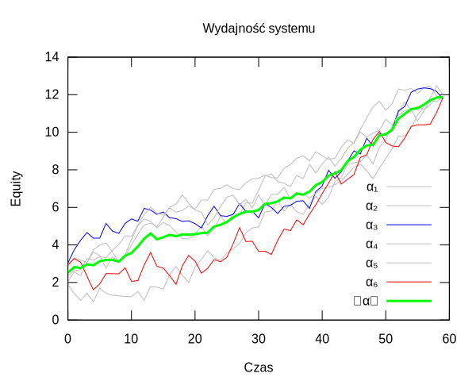

Wyściółka szuflady biurka programisty to miejsce na prywatne eksperymenty, artykuły i eseje. Dotyczą programowania, języków (Mediolan), kompilatorów, obliczeń, ale także rynku walut (Forex) i narzędzi do tworzenia muzyki (Akolada). Pojawią się tu na pewno i inne tematy.
Autor
Marcusa Firmus (https://github.com/marcusfirmus)
Kontakt marcusfirmus@gmail.com
Eseje i artykuły
- Zaproszenie - Skąd się wzięła “Wyściółka”, co to jest “Szuflada”.
- Sztuczna Inteligencja
- W jaki sposób AI staje się inspiracją - Sztuczna Inteligencja
- Odkrywanie embeddingów - Embeddingi na laptopie
- Model onlineowy pisze program, który steruje modelami lokalnymi - Oceniacz modeli
ollama
Przedsięwzięcia
Akolada - Język zapisu muzyki. Implementacja obejmuje translację na MIDI. Działający prototyp translatora potrafi generować zaskakująco dobrze brzmiące utwory. Oczywiście, o ile kompozytor lub kopista dobrze je zapisze!
o: instr=71, begin+={0..0.1}, vol*={0.9..1.1}
modifier >: down, up, vol*=1.5
+-- tempo 120 +-------+-------+-------+-------+-------+-------+-------+-------+-------
| | | |
+-------+-------+-------+-------+-------+-------+-------+-------+-------+-------+-------
| o | | |
+-------+o------+-------+-------+-------+-------+-------+-------+-------+-------+-------
| o # o=== | | |
G: o-------+-------+-------+-------+-------+-------+-------+-------+-------+-------+-------
| o=== | |
+-------+-------+------ b o --x-x- x x -------+-------+-------+-------+-------+-------
> >
Mediolan - Eksperymentalny język programowania stworzony po to, żeby udowodnić możliwość optymalnego alokowania pamięci. Używamy Data Flow Analysis i alokacji regionami.
function generate( max, acc )
{
while(1) {
x1 = phi( acc, x4 ); // T1(i) = Tacc | T4(i)'
x2 = car( x1 ); // T2(i) = car(T1(i))
if ( x2 >= max )
return x1;
else
x3 = x2 + 1;
x4 = cons[1]( x3, x1 ); // T4(i) = cons[1,i](int, T1(i))
}
}
Forex - Proponuję głęboki wgląd w dynamikę Forexu. Motywowany oczywiście próbami znalezienia Świętego Graala, czyli zbudowania Zawsze Zarabiającego Systemu. W teorii jesteśmy zaskakująco blisko takiego systemu, a przy okazji odwiedzamy bardzo ciekawe zagadnienia.

Być może pojawią się kolejne…
??? ...